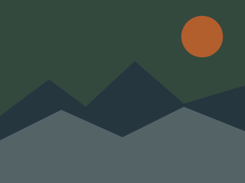
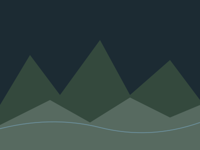
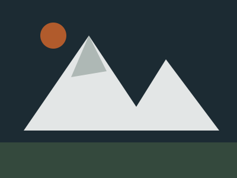
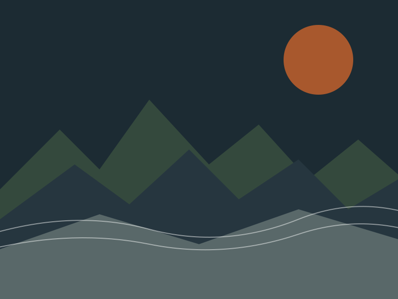

The Routes
A few miles from the trail log

Deosai
Nangma Shimshal
Shimshal
K2 Base CampTrail & Compass runs small, guide-led expeditions across Gilgit-Baltistan — from a two-day Deosai crossing to full Karakoram base camp treks. No crowds, no fixed itineraries copied off a blog.
We started as three friends mapping unmarked shepherd trails around Skardu. Today Trail & Compass is a full-time outfit of certified mountain guides, cooks and porters — all from villages inside the valleys we trek through.
Every itinerary is built around acclimatisation, weather windows, and the actual condition of the trail this season — not a template pulled from a brochure.
Our Full Story →
Deosai Plains, JulyEvery trip is guide-led and fully catered. Pick a fixed departure or ask us to build a custom route.
Multi-day treks across Deosai, Nangma Valley and K2 Base Camp, led by certified local guides.
4x4 routes into Shimshal and Khaplu, reaching valleys most travel companies never take you.
Tents, sleeping systems and cold-weather gear, tested at altitude and rented by the day.
We cap every trek at 8 trekkers so guides can actually watch for altitude symptoms — not just count heads. Every booking also puts wages directly into the villages you're walking through.
Talk to a Guideper group, for safer pacing
local guides & porters
satellite comms on-trail
route testing & mapping
"Our guide rerouted us around a washed-out bridge without missing a beat. Felt like walking with someone who actually grew up here — because he did."
"First trek where the pace matched my actual fitness instead of a brochure schedule. Never once felt rushed or left behind."
"Rented a full cold-weather kit from them for three days. Every piece had clearly been used and checked, not just pulled off a shelf."

Deosai
NangmaShimshal
K2 Base Camp